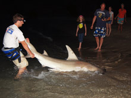

About the Show
BlacktipH Fishing is an online fishing hosted on YouTube. The show is dedicated to showing our viewers the exciting world of big game fishing. The main species that we target are sharks. The show is 100% catch and release. We promote conservation and participate in NOAA's Apex Predator's shark tagging program.
It all started in 2003 with a young angler fishing for sharks on the beaches in Florida. As his passion for the sport grew, Joshua Jorgensen began documenting his catches via camcorder and in 2008 BlacktipH Fishing was born. The name for the show was created from the online personality that Jorgensen had developed over the years, being known as the “blacktip hunter”. The "H" in BlacktipH stands for hunter.
Our host, Joshua Jorgensen, grew up fishing in Canada on Lake St. Clair. As his hunt for big fish expanded, he moved to saltwater fishing in pursue of sharks and other large pelagic predators. He is the founder and director of the "Blacktip Challenge Shark Fishing Tournament" and the co-founder of the "Muskie Challenge Fishing Tournament".
Jorgensen is a lead committee member of the ILSFA (International Land-Based Shark Fishing Association). His fishing adventures have been featured in numerous media articles, including: Global Angler, Spiegel TV, Spiegel Magazine, Sun Newspapers and Living Magazine.